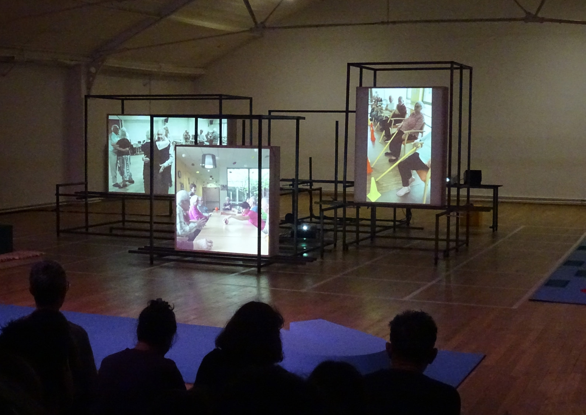
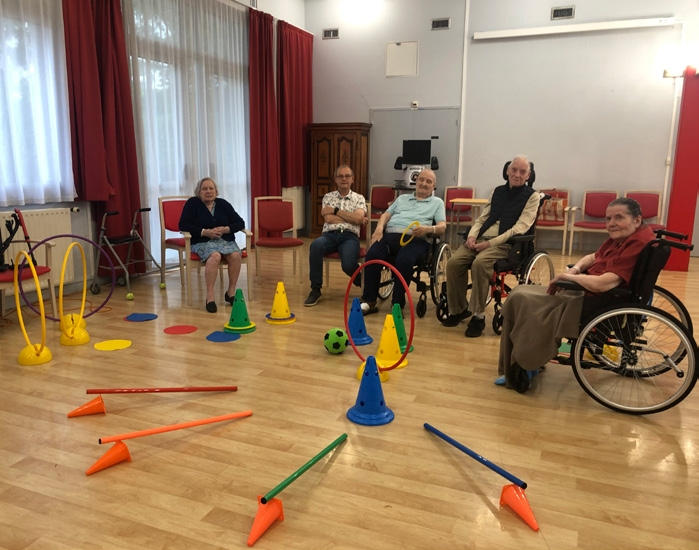
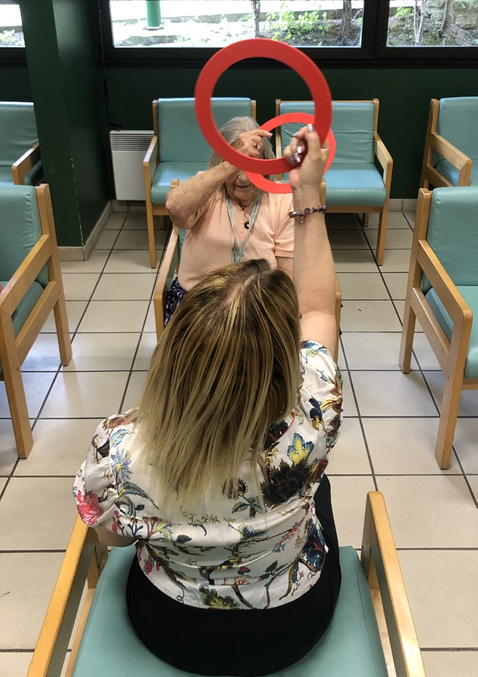
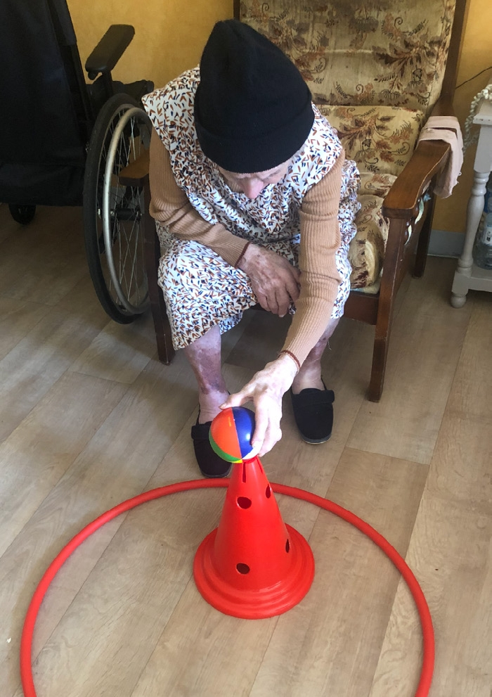
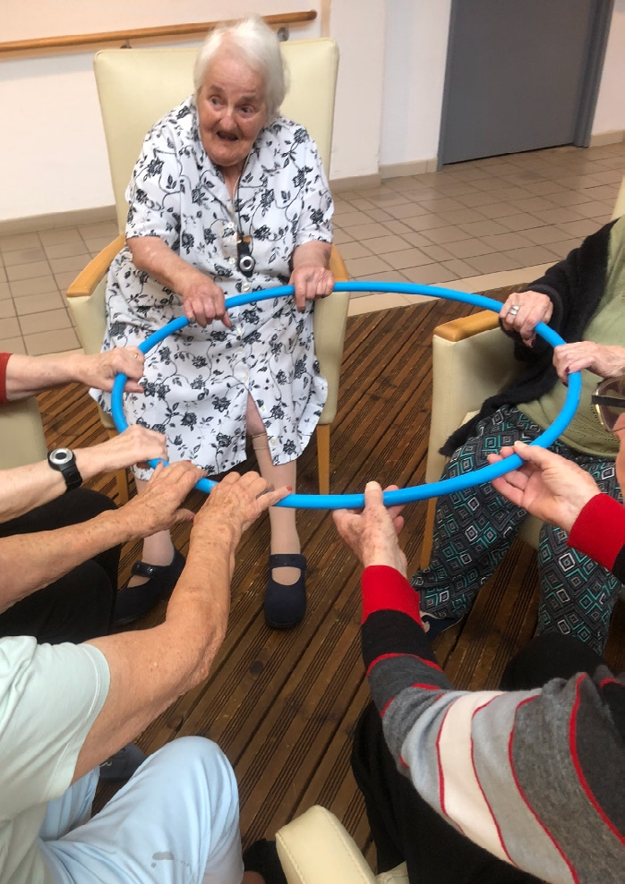
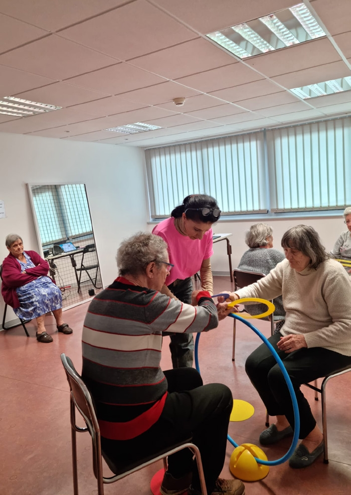
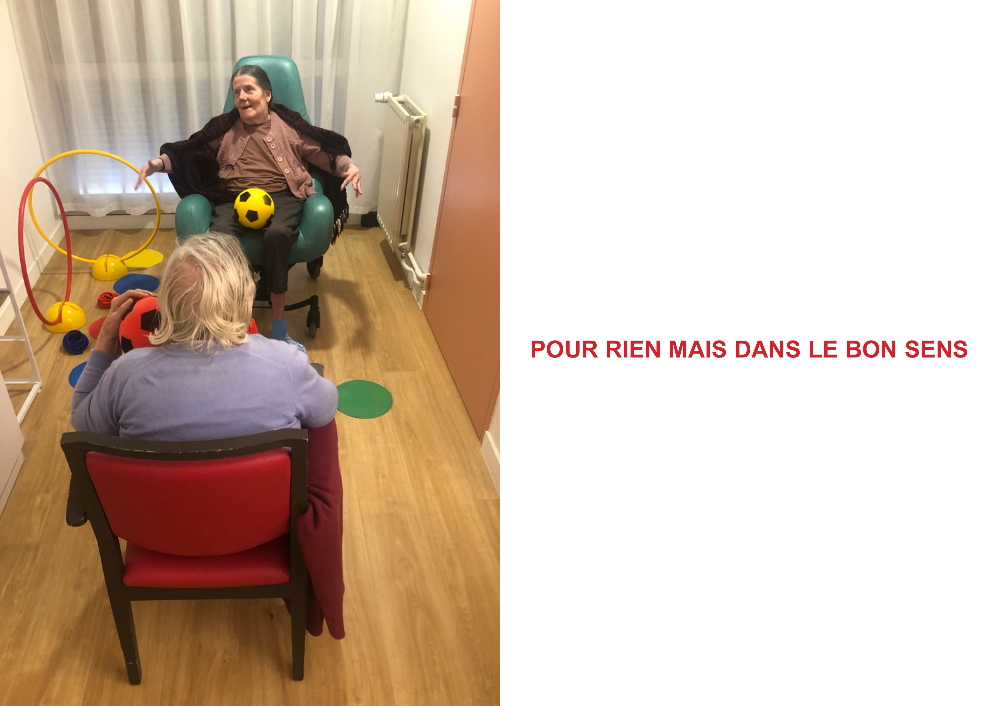
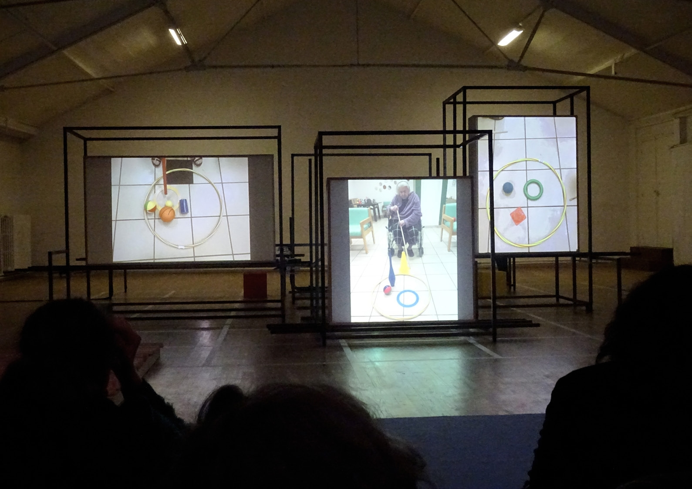
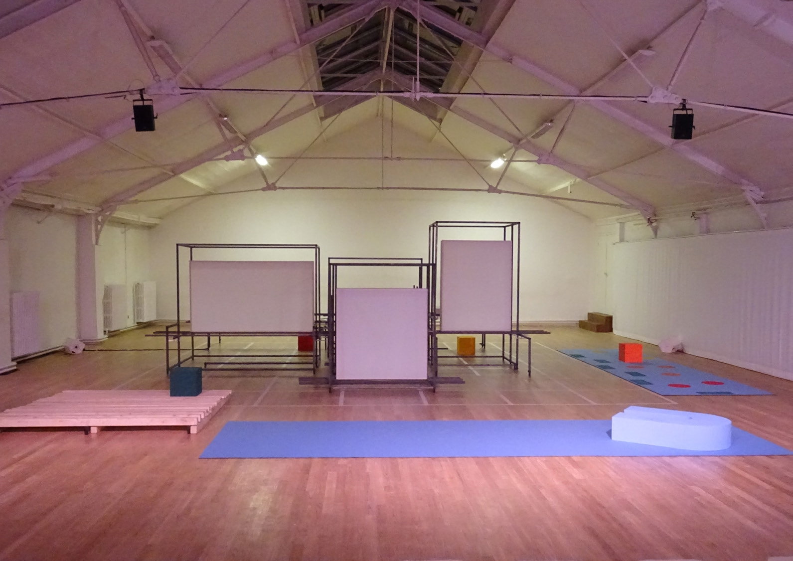

Claudia Triozzi propose dans Pour rien mais dans le bon sens une expérience performative qui poursuit la démarche de « transmission par le corps » qu’elle explore depuis 2011, une recherche qu’elle a pu approfondir cette année dans le cadre d’une résidence à l’hôpital proposée par le Festival d’Automne.
En complicité avec un groupe de séniors, Claudia Triozzi instaure un langage chorégraphique-performatif dans lequel la virtuosité et l’endurance cèdent la place aux potentialités dont disposent ces corps souvent éloignés de la scène.
Nourrie par les expressions gestuelles saisies chez les résidentes et résidents de différents établissements gériatriques et à partir d’exercices empruntés à des activités physiques adaptées, la chorégraphe élabore des temps de créativité communs et des récits à partager.
Ainsi cherche-t-elle à générer une « présence vacillante » dans Pour rien mais dans le bon sens, à l’entre lacement de l’espace, du son, de la matière corporelle et des objets ludiques issus du quotidien.
Claudia Triozzi convoque les notions d’ombre, de reflet et d’écho, qui permettent de décliner les nombreuses possibilités de mettre en scène un « corps traversé », sans limite d’âge et sans les artifices de la théâtralité.

Avec Pour rien mais dans le bon sens, j’ai voulu valoriser le temps dédié à la création et à la transmission, convaincue que toute activité quotidienne recèle une part de créativité, pour amener celles et ceux qui sont éloignés de la scène à vivre cette expérience.
Je m’interroge sur le bien vieillir et la prévention. Mon parcours d’artiste et de femme me ramène toujours au mouvement, à la danse, nourris par les mots et les actes qui ont forgé mon travail d’auteure et de pédagogue. Il s’agit d’une rétrospective interne, d’une transmission par le corps, construite au fil des années, des désirs et parfois des pertes d’horizon. Il reste en moi un élan vif, transmissible par le geste et la voix.
Après de premières expérimentations à l’Ehpad Cousin de Méricourt à Cachan (94) entre 2021 et 2024 ainsi qu’au CDCN Le Dancing à Dijon (21), l’année 2024 a vu la poursuite de cette recherche à l’hôpital Fernand Widal à Paris (75) et à l’Ehpad Résidence du Volp à Sainte-Croix-Volvestre (09). Ce travail a abouti à la création d’une pièce chorégraphique présentée en novembre 2024 à La Ménagerie de Verre dans le cadre du Festival Les Inaccoutumés et programmée par le Festival d’Automne en novembre 2024.
Je souhaite désormais diffuser ce travail dans des espaces de soins notamment en Ehpad ou des lieux d’exposition, afin de transmettre et performer cette expérience.
Qu’est-ce que ce corps qui montre ses mots, que cherche-t-il et que devient-il pour se dire aujourd’hui?


La réalisation de ce projet s’est déroulée en plusieurs étapes, chacune a son rythme. À chaque phase, j’ai invité les participant·es à s’engager dans une expérience partagée. Cette démarche a largement dépassé ce qu’on entend habituellement par « intervention artistique » en milieu hospitalier. J’ai cherché, avec certain·es résident·es, à partager des moments plus intimes et réguliers, établissant une confiance nécessaire pour voir émerger des progrès parfois inattendus.
En partant d’exercices inspirés d’activités physiques adaptées, nous avons exploré le mouvement, d’abord sur chaise puis dans l’espace, avec divers objets. Ces exercices sont devenus la base d’une suite de gestes, de chorégraphies et de récits. En prenant appui sur la notion de prévention, j’ai voulu amener les corps à réfléchir à l’espace et à en vivifier les possibilités. Ces ateliers ont servi de terrain d’exploration pour construire une scénographie et une dramaturgie du geste, où chaque participante trouve sa propre expression en lien avec son âge.
Les enregistrements m’ont sensibilisée aux pathologies liées à l’émission sonore (oublis, répétitions, écholalies). J’ai recueilli des voix exprimant la solitude, la peur de la mort ou le désir de rentrer chez soi. En écho au compositeur Luciano Berio, j’ai placé le son et la voix au centre de ma recherche. Avec la compositrice HACO (Japon) et la pianiste- improvisatrice Cynthia Caubisens, j’ai créé une bande sonore mêlant bruitages, voix pathologiques, voix de l’enfance et improvisations instrumentales en un récit volontairement fragmenté, où leurs voix se mêlent à la mienne.
En allant au-delà d’une simple intervention, en approfondissant la compréhension des pathologies et de l’accompagnement en milieu de soins. J’ai partagé d’authentiques moments de créativité, avec la même énergie que dans mes interventions auprès d’un public plus jeune. Dans ma version de « gymnastique adaptée », j’ai conçu des exercices ludiques où l’accent est mis sur la relation à l’autre. Il ne s’agissait pas seulement de reproduire un mouvement, mais de l’enrichir, grâce à la manipulation d’objets et à l’exploration de trajectoires gestuelles personnelles. J’ai également développé de petites installations pour reconnaître les exercices et gagner en autonomie. La perte de l’équilibre a constitué un axe de travail, tout comme l’improvisation issue d’exercices ludiques. Ces séances ont été filmées et photographiées, créant une matière pédagogique et artistique.
La restitution de la pièce a pris la forme d’une installation sur trois écrans, mettant en regard différentes temporalités et diffusant les enregistrements réalisés. Ainsi, les résident·es se sont exprimé·es et ont pu quitter symboliquement l’Ehpad par l’image, révélant leurs désirs toujours présents. Ces supports pourraient devenir un outil pédagogique de création pour les établissements et le personnel.
Je souhaite poursuivre cette démarche, malgré l’énergie qu’elle demande. Il me semble nécessaire de diffuser et de faire connaître ces expériences, pour continuer à interroger la place du corps, du mouvement et de la créativité dans les espaces de soins.



Entretien avec Claudia Triozzi
Pour moi, me rendre en Ehpad, c’était aller à la rencontre d’un lieu redouté. J’étais animée par l’intérêt d’aller voir ces « résident.e.s », comme on les appelle. Il m’est souvent arrivé de vivre de telles rencontres face à des déceptions. Dans mon cas, il s’agissait d’une vraie déception face à l’« institution » qui nous abandonnait – on était en 2020, il n’y avait plus d’aide à la création – avec des justifications peu satisfaisantes. En même temps, il n’était pas uniquement question d’un manque de soutien financier pour créer mais aussi d’un vrai sentiment de non-appartenance à un milieu de travail. L'autonomie du métier m’a toujours préoccupée. Réagir, aller voir. Cette intention se présente à moi et je la suis de près, je la prends « très au sérieux », lorsqu’il y a un trouble dans l’existence qui est dur et grave, j’ouvre les espaces. Je ne cherche pas à m’adapter à une nouvelle situation mais plutôt à l’apprivoiser et la contraindre, à renouveler l’exercice de la vie et de la création.
Pour rien mais dans le bon sens du terme n'aurait pas été possible sans l'accueil généreux de l’Ehpad Cousin de Méricourt à Cachan ou Les Hortensias à Dijon.
J’ai bénéficié de confiance et de temps pour organiser mon travail, partager des moments avec les résidents et le personnel. Les exercices se sont construits sur des gestes simples, la manipulation d’objets et des jeux de mémoire épisodique à partir de photos et vidéos que nous avions réalisées. Il s’agissait d’élargir l’espace et le mouvement, malgré les contraintes physiques.
Ce projet prolonge mes questionnements sur la place des expériences de vie dans la création. En Ehpad, la notion de temporalité est bouleversée : alors que notre quotidien file, là-bas, il faut « faire passer le temps ». Sur scène, cela devient une composition qui joue avec les rôles et les images. Les d’assemblage de l’espace scénique changent le statut de la place de l’image. J’utilise des moyens pauvres pour la captation des images. Par le montage, les rôles se déjouent à l’intérieur des images. Elles accomplissent un détachement de la même manière que je joue un autre rôle pour la scène.
Je préfère parler d’« exercice », un terme qui me tient à cœur. On « exerce une profession », un engagement sur le long terme. En 2021, j’ai approfondi la gymnastique adaptée aux personnes âgées, travaillant sur la prévention des chutes et la perte d’équilibre. En Ehpad, ces séances ont évolué vers des moments d’échange, où le dialogue avec un petit nombre de personnes âgées m’a permis de parvenir à une entente amicale avec le groupe et le lieu. J’ai créé ainsi un espace d’échange direct et j’ai mis en partage un projet visuel avec le groupe, qui a bien accepté d’y participer. Ils me disaient : « On le fait pour toi, Claudia! » C’est ainsi que l’Ehpad est devenu ma salle de répétition et le théâtre où la perception du groupe, toujours mouvante, libère des énergies. C’est ça la performance !
Pour rien mais dans le bon sens est une transmission d’expérience toujours ouverte. Offrir un regard moins stéréotypé de ces lieux d’accueil et de soins – où une sociabilité existe et des amitiés prennent vie – pourrait être un souhait, je laisse les portes grandes ouvertes. Il suffirait d’entrer dans un Ehpad pour être saisi par ce qui s’y joue. Une participante « suffoquait » mon prénom dans le rire (pendant les exercices) en me disant : « Claudia, Claudia! Qu’est-ce que tu me fais faire ? ». Pur désir, c’est tout, cela nous échappait et nous voilà bien. Peut-être encore, ce serait là le contact que je cherche avec le public.


